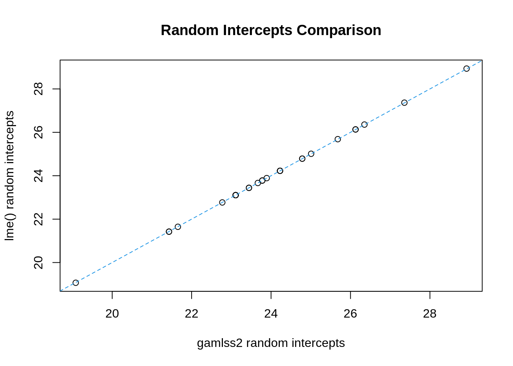

library("gamlss")
library("gamlss2")
library("nlme")
data("Orthodont")Random Effects
Random effects can be included as an additive term for any distribution parameter in a gamlss2 model by using the re() function in package gamlss2. Within the GAMLSS model fitting, the random effects additive term is then fitted locally by an interface with lme function of the nlme package.
1 Random effects only in the \(\mu\) model
First we will consider the case of random effects only in the \(\mu\) model. In this case the estimates of the fixed effects for the \(\sigma\) distribution parameter (and also \(\nu\) and \(\tau\)) in the gamlss2 fit do not use REML estimation.
This is not a problem if the total (effective) degrees of freedom (df) for estimating the fixed and random effects for \(\mu\) are small relative to the total df (i.e. the sample size). Example 1 below illustrates this.
However, if the total (effective) df for estimating the fixed and random effects for \(\mu\) are a significant proportion of the total df, then the estimates of the fixed effects for \(\sigma\) will be seriously negatively biased. Example 2 below illustrates this. [The estimated fixed effects for \(\mu\) are OK (but not their estimated standard errors), and the random effects parameters are REML type estimates and are also OK. So, if these estimates are of primary interest, and the estimate of the \(\sigma\) parameter is not of interest, then there is no problem.]
The total (effective) df for a random effect is ALWAYS less than the df for the corresponding fixed effects. So a quick check [of whether there might be a problem with serious negative bias in the estimates of the fixed effects for \(\sigma\) in the gamlss() fit] is to compare the corresponding fixed effects df with the total df. For example, in a simple random intercepts model for \(\mu\), if m is the number of individuals (or levels of the random effects factor), and n is the total sample size, then compare m with n, and if the proportion m/n is, say, greater than 0.05, there may be problem. Similarly for a random intercepts and slopes model for \(\mu\), then compare 2m with n, and look and the proportion 2m/n.
In the first example below using re() in gamlss for random effects works [i.e. where the total number of individuals (or factor levels) is very small relative to the total number of observations and so REML estimation is not needed, for example, a relatively low number of individuals, each with a lot of repeated measurements, OR a random factor with a low number of levels, each with a lot of observations]. We show that using LME locally in gamlss() by the re() argument gives very similar results, to using LME directly.
2 Example 2
In the second example below using the Orthodont data, the number of individuals (or factor levels) is significant relative to the total number of observations, and there is a problem with a seriously negatively biased estimate of \(\sigma\). We show that using lme locally in gamlss2 by the re() function gives a very different estimate of \(\sigma\) than using LME directly. The Orthodont data set is analysed in detail on pages 147-155 of Pinheiro and Bates (2000) “Mixed-Effects Models in S and S-PLUS”.
First fit a random intercepts model using LME:
l1 <- lme(distance ~I(age-11),random =~ 1|Subject, data=Orthodont)
l1Linear mixed-effects model fit by REML
Data: Orthodont
Log-restricted-likelihood: -223.5013
Fixed: distance ~ I(age - 11)
(Intercept) I(age - 11)
24.0231481 0.6601852
Random effects:
Formula: ~1 | Subject
(Intercept) Residual
StdDev: 2.114724 1.431592
Number of Observations: 108
Number of Groups: 27 The model is
\[ \begin{split} \texttt{distance}_{ij} \sim& NO(0, \sigma) \\ \mu =& \beta_{0}+ \beta_1 (\texttt{age}-11) +\alpha_j \\ \end{split} \] where \(\alpha_j \sim NO(0, \sigma_a)\) The fitted model gives estimates \(\beta_0 = 24.02\), \(\beta_1 = 0.660\), \(\sigma_a = 2.1147\) and \(\sigma = 1.432\).
Now fit the random intercepts model using function re() in gamlss2: Note that gamlss2 has problem in interpreting the I() function so we create the variable age_11
Note
there is a problem with random intercepts in gamlss2 so we use gamlss
b1 <- gamlss2(distance ~ I(age-11) + re(random =~ 1 | Subject), data = Orthodont)GAMLSS-RS iteration 1: Global Deviance = 355.3077 eps = 0.339068
GAMLSS-RS iteration 2: Global Deviance = 355.3077 eps = 0.000000 m1 <- gamlss(distance ~ I(age-11) + re(random =~ 1 | Subject), data = Orthodont)GAMLSS-RS iteration 1: Global Deviance = 355.3077
GAMLSS-RS iteration 2: Global Deviance = 355.3077 ## extract fitted random intercept special mode term
re <- specials(b1, term = "random", elements = "model")
## model summary
summary(re)Linear mixed-effects model fit by maximum likelihood
Data: x$data
AIC BIC logLik
449.3895 457.4359 -221.6948
Random effects:
Formula: ~1 | Subject
(Intercept) Residual
StdDev: 2.072142 1.783505
Variance function:
Structure: fixed weights
Formula: ~weights_w
Fixed effects: x$fixed
Value Std.Error DF t-value p-value
(Intercept) 6.824005e-16 0.4235944 81 1.610976e-15 1
Standardized Within-Group Residuals:
Min Q1 Med Q3 Max
-3.68695129 -0.53862941 -0.01232442 0.49100161 3.74701483
Number of Observations: 108
Number of Groups: 27 ## same with gamlss
getSmo(m1)Linear mixed-effects model fit by maximum likelihood
Data: Data
Log-likelihood: -221.6948
Fixed: fix.formula
(Intercept)
1.278595e-15
Random effects:
Formula: ~1 | Subject
(Intercept) Residual
StdDev: 2.072142 1.13493
Variance function:
Structure: fixed weights
Formula: ~W.var
Number of Observations: 108
Number of Groups: 27 Compare estimated coefficients
## main model coefficients
coef(b1) mu.p.(Intercept) mu.p.I(age - 11) sigma.p.(Intercept)
24.0231481 0.6601852 0.2260047 summary(l1)Linear mixed-effects model fit by REML
Data: Orthodont
AIC BIC logLik
455.0025 465.6563 -223.5013
Random effects:
Formula: ~1 | Subject
(Intercept) Residual
StdDev: 2.114724 1.431592
Fixed effects: distance ~ I(age - 11)
Value Std.Error DF t-value p-value
(Intercept) 24.023148 0.4296605 80 55.91193 0
I(age - 11) 0.660185 0.0616059 80 10.71626 0
Correlation:
(Intr)
I(age - 11) 0
Standardized Within-Group Residuals:
Min Q1 Med Q3 Max
-3.66453932 -0.53507984 -0.01289591 0.48742859 3.72178465
Number of Observations: 108
Number of Groups: 27 ## random effect coefficients
plot(coef(re)[, 1] + coef(b1)["mu.p.(Intercept)"], coef(l1)[, 1],
xlab = "gamlss2 random intercepts", ylab = "lme() random intercepts",
main = "Random Intercepts Comparison")
abline(0, 1, lty = 2, col = 4)
The fitted model gives estimates \(\beta_0 = 24.02\), \(\beta_1 = 0.660\), \(\sigma_a = 2.072\) and \(\sigma = 1.254\) The estimate of \(\sigma\) is seriously negatively biased, because it is not a REML estimate.
For this simple random intercepts model, the estimate of \(\sigma\) can be adjusted by multiplying by the local LME residual given by 1.135 giving: adjusted \(\sigma = 1.254*1.135 = 1.42\), which is very close to the LME estimate of \(\sigma\).
Warning
However this adjustment does NOT work for more complex random effects models.
References
Pinheiro, J. C., and D. M. Bates. 2000. Mixed-Effects Models in S and S-Plus. Springer. https://link.springer.com/book/10.1007/b98882.
Rigby, R. A., and D. M. Stasinopoulos. 2005. “Generalized Additive Models for Location, Scale and Shape.” Journal of the Royal Statistical Society C 54 (3): 507–54. https://doi.org/10.1111/j.1467-9876.2005.00510.x.